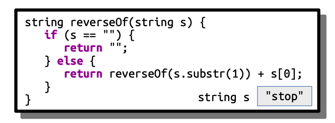
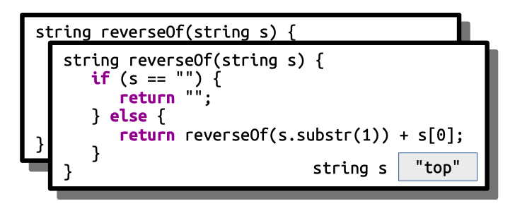
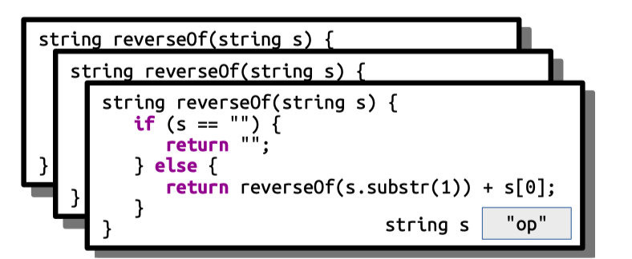
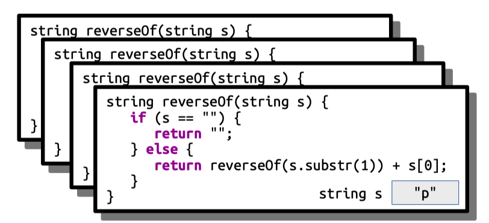
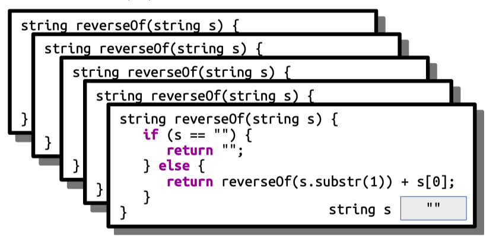
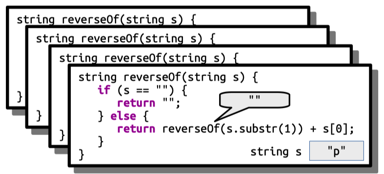
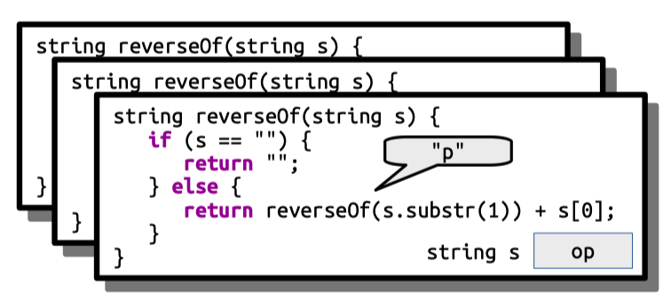
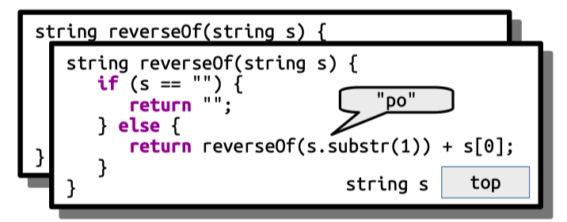
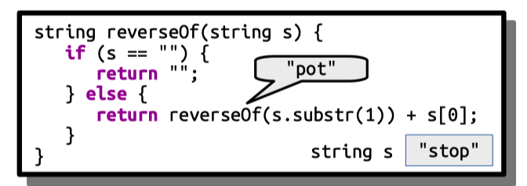

Section 1.1 C++ and Recursion¶
Each week, you’ll meet for about an hour in a small discussion section. Your section leader will help review the material, explore some topics in more depth, and generally answer questions as appropriate. These section problems are designed to give you some extra practice with the course material. You’re not expected to complete these problems before attending section and we won’t be grading them for credit. Instead, think of them as a resource you can use to practice with the material as you see fit. You’re not expected to cover all these problems in section, so feel free to look over the solutions to the problems you didn’t complete.
C++ Fundamentals: Code Reading¶
Returning and Printing¶
Topics: Function call and return, return types
Below is a series of four printLyrics_v# functions, each of which has a blank where the return type should be. For each function, determine
what the return type of the function should be,
what value, if any, is returned, and
what output, if any, will be produced if that function is called.
Is it appropriate for each of these functions to be named printLyrics? Why or why not?
_____ printLyrics_v1() {
cout << "Havana ooh na na" << endl;
}
_____ printLyrics_v2() {
return "Havana ooh na na";
}
_____ printLyrics_v3() {
return "H";
}
_____ printLyrics_v4() {
return 'H';
}
Solution
void printLyrics_v1() {
cout << "Havana ooh na na" << endl;
}
string printLyrics_v2() {
return "Havana ooh na na";
}
string printLyrics_v3() {
return "H";
}
char printLyrics_v4() {
return 'H';
}
Of these four functions, only printLyrics_v1 will print anything. Specifically, it prints out the string "Havana ooh na na.". The name “printLyrics” is inappropriate for the other functions, as those functions don’t actually print anything. 😃
The function printLyrics_v1 doesn’t return anything – it just sends information to the console. As a result, its return type should be void. The functions printLyrics_v2 and printLyrics_v3 each return strings, since C++ treats anything in double-quotes as a string. Finally, printLyrics_v4 returns a char, since C++ treats anything in single-quotes as a character.
Testing and Debugging
Topics: Testing, loops, types, function call and return
Consider the following piece of code:
/* Watch out! This code contains many bugs! */
bool hasDoubledCharacter(string text) {
for (int i = 0; i < text.size(); i++) {
string current = text[i];
string previous = text[i - 1];
return current == previous;
}
}
This code attempts to check whether a string contains at least two consecutive copies of the same character. Unfortunately, it has some errors in it.
Identify and fix all the errors in this code.
Solution
Here’s a list of the errors in the code:
It uses the
stringtype instead of thechartype when representing individual characters in the string. This will cause the code to not compile.On the first iteration of the loop, we will try to look at the -1 st character of the string, which will probably cause a crash and definitely is wrong.
The
returnstatement inside the for loop means that we’ll never look at more than one pair of characters; the function will exit as soon as the return statement is executed, so we can’t progress from one iteration to the next.If the string doesn’t contain any doubled characters, the function never returns a value.
We can fix all of these errors by rewriting the code like this:
bool hasDoubledCharacter(string text) {
for (int i = 1; i < text.size(); i++) {
char current = text[i];
char previous = text[i - 1];
if (current == previous) {
return true;
}
}
return false;
}
To make things cleaner, we could remove the current and previous variables:
bool hasDoubledCharacter(string text) {
for (int i = 1; i < text.size(); i++) {
if (text[i] == text[i - 1]) {
return true;
}
}
return false;
}
Although we hadn’t talked about pass-by-const reference in the first week of class, we really should use the pass-by-const reference here because we are reading but not modifying the text parameter.
bool hasDoubledCharacter(const string& text) {
for (int i = 1; i < text.size(); i++) {
if (text[i] == text[i - 1]) {
return true;
}
}
return false;
}
We can write test cases to check our work and ensure that the code indeed works as expected. Imagine you’re given the following provided test:
PROVIDED_TEST("Detects doubled characters") {
EXPECT(hasDoubledCharacter("aa"));
EXPECT(hasDoubledCharacter("bb"));
}
This test checks some cases, but leaves others unchecked. As a result, even if these tests pass, it might still be the case that the function is incorrect.
Identify three types of strings not tested by the above test case. For each of those types of strings, write a
STUDENT_TESTthat covers that type of string.
Solution
Notice that the test cases we have are purely for
strings that have doubled characters,
where the doubled letters are at the beginning,
where there are no undoubled characters,
where the doubled characters are lower-case letters, and
that have length exactly two.
To find some classes of strings that don’t have these properties, we can simply break all of the above rules and see what we find! So let’s write tests for each of the following types of strings:
strings that don’t have doubled letters;
strings that have doubled letters, but not at the beginning;
strings that have doubled letters, but also some non-doubled letters;
strings that have doubled non-letter characters; and
strings whose lengths aren’t two (maybe shorter strings or longer strings).
Here’s some sample tests we could write:
STUDENT_TEST("Strings without doubled characters") {
EXPECT(!hasDoubledCharacter("abcd")); // Nothing doubled
EXPECT(!hasDoubledCharacter("aba")); // a appears twice, but not consecutively
EXPECT(!hasDoubledCharacter("Aa")); // Not technically the same character
}
STUDENT_TEST("Strings with doubled characters not at the front") {
EXPECT(hasDoubledCharacter("abb")); // Back
EXPECT(hasDoubledCharacter("abcddabc")); // Middle
}
STUDENT_TEST("Strings with doubled non-letter characters") {
EXPECT(hasDoubledCharacter("**")); // Symbols
EXPECT(hasDoubledCharacter(" ")); // Spaces
EXPECT(hasDoubledCharacter("00")); // Numbers
EXPECT(hasDoubledCharacter("!!")); // Punctuation
}
STUDENT_TEST("Short strings") {
EXPECT(!hasDoubledCharacter("")); // Too short
EXPECT(!hasDoubledCharacter("a")); // Too short
}
References Available Upon Request¶
Topic: Reference parameters, range-based for loops
Reference parameters are an important part of C++ programming, but can take some getting used to if you’re not familiar with them. Trace through the following code. What does it print?
void printVector(const Vector<int>& values) {
for (int elem: values) {
cout << elem << " ";
}
cout << endl;
}
void maui(Vector<int> values) {
for (int i = 0; i < values.size(); i++) {
values[i] = 1258 * values[i] * (values[2] - values[0]);
}
}
void moana(Vector<int>& values) {
for (int elem: values) {
elem *= 137;
}
}
void heihei(Vector<int>& values) {
for (int& elem: values) {
elem++;
}
}
Vector<int> teFiti(const Vector<int>& values) {
Vector<int> result;
for (int elem: values) {
result += (elem * 137);
}
return result;
}
int main() {
Vector<int> values = { 1, 3, 7 };
maui(values);
printVector(values);
moana(values);
printVector(values);
heihei(values);
printVector(values);
teFiti(values);
printVector(values);
return 0;
}
Solution
Here’s the output from the program:
1 3 7
1 3 7
2 4 8
2 4 8
Here’s a breakdown of where this comes from:
The
mauifunction takes its argument by value, so it’s making changes to a copy of the original vector, not the vector itself. That means that the values are unchanged back in main.The
moanafunction uses a range-based for loop to access the elements of the vector. This makes a copy of each element of the vector, so the changes made in the loop only change the temporary copy and not the elements of the vector. That makes that the values are unchanged back in main.heihei, on the other hand, usesint&as its type for the range-based for loop, so in a sense it’s really iterating over the elements of the underlying vector. Therefore, its changes stick.The
teFitifunction creates and returns a new vector with a bunch of updated values, but the return value isn’t captured back in main.
C++ Fundamentals: Code Writing¶
The License Plate Game¶
If you’ve driven on California streets, you may have noticed that California license plates generally consist of a number, three letters, then another three numbers. For example, you might see these license plates:
5NPT839 4KDD232 7FTW142
On a long highway drive in California, one fun way to pass the time is to play the license plate game, in which you look at the license plate of the nearest car, then try to find a word that uses the letters in that license plate in the order in which they appear. For example, for the license plate 5NPT839, you might use the word INPUT. For 4KDD232, you could use KIDDING. For 7FTW142, you could use AFTERGLOW.
For a word to match a license plate, it has to contain all the letters in the license plate in the order in which they occur. This means, for instance, that FTW doesn’t match WATERFALL because the letters are in the wrong order. Similarly, NNN doesn’t match ENTIRE, since only one of the N’s was matched.
Certain letter combinations are a lot harder to find words for than others. The letter combination YRW only matches a handful of words (like EYEBROW). The combination XCX only matches two English words (EXECUTRIX, a woman who executes a will, and its plural EXECUTRIXES), and some combinations don’t match anything at all. There are no English words that match QQQ, for example.
Write a function
bool wordMatchesPlate(string word, string plate);
that takes as input a word and a California license plate, then returns whether the word is a match for that license plate. Your code should work regardless of whether the letters in word or plate are in UPPER CASE or in lower case. The license plate may be a regular California license plate (e.g. 4KDD232), or might be a custom plate (I recently saw 2FAST4U on the freeway). In either case, the function should return whether all the letters of the license plate appear in the same relative order within the word, ignoring digits and other symbols.
Solution
bool wordMatchesPlate(string word, string plate) {
/* Do case conversion up front so that we can assume all letters have
* the same representation.
*/
word = toUpperCase(word);
plate = toUpperCase(plate);
/* Track where we are within the word. */
int index = 0;
/* Scan across the characters of the license plate. For each letter, see
* if we can find it in the word without having to look backwards.
*/
for (char ch: plate) {
if (isalpha(ch)) {
/* See if we can find that character. */
index = word.find(ch, index);
/* Didn't find it? Oops. */
if (index == string::npos) {
return false;
}
/* Skip past that character. */
index++;
}
}
/* If we're here, we've matched all the charactes in the right order. */
return true;
}
Problem Five: The Look-And-Say Sequence¶
(Thanks to Jerry Cain for this amazing problem.)
The look-and-say sequence is the sequence of numbers that begins as follows:
1
11
21
1211
111221
312211
13112221
Each number in the sequence is generated by “reciting” its predecessor, and then capturing what was said in a number format that should be clear from the example below. Reciting 111221 out loud, you’d look and say: 3 ones, followed by 2 twos, followed by 1 one, or 312211. Reading 312211 aloud, you’d say: 1 three, 1 one, 2 twos, 2 ones, or 13112221.
Even if a number doesn’t fall in the actual sequence, it should be clear how to generate its look-and-say successor. Write a function
string lookAndSay(string number);
that takes a number in string form, and returns its look-and-say form. You can assume the incoming string contains only digits.
Solution
This solution works by finding a run of equal values, then writing out how many times it saw each value.
string lookAndSay(string number) {
string result;
/* Current position. */
int index = 0;
while (index < number.length()) {
int numCopies = 0;
/* Keep scanning forward until we either (1) hit the end of the string
* or (2) find a character that doesn't match the current one.
*/
while (numCopies < number.size() &&
number[index] == number[index + numCopies]) {
numCopies++;
}
/* Write down the appropriate number of copies. */
result += to_string(numCopies) + number[index];
/* Step past all the copies we read. */
index += numCopies;
}
return result;
}
Recursion Fundamentals¶
Recursion Tracing¶
Topics: Recursion, strings, recursion tracing
In lecture, we wrote the following recursive function to reverse a string:
string reverseOf(string s) {
if (s == "") {
return "";
} else {
return reverseOf(s.substr(1)) + s[0];
}
}
Trace through the execution of reverseOf("stop") along the lines of what we did in Wednesday’s lecture, showing stack frames for each call that’s made and how the final value gets computed.
Solution
Our initial call to reverseOf("stop") looks like this:

This call then fires off a call to reverseOf("top"), which looks like this:

This call fires off a call to reverseOf("op"):

This in turn calls reverseOf("p"):

This in turn calls reverseOf(""):

This triggers the base case and returns the empty string. (Notice that the reverse of the empty string "" is indeed the empty string ""):

We now append p to return "p":

We now append o to return "po":

We append t to return "pot":

And finally we append s to return "pots" back to whoever called us. Yay!
Human Pyramids¶
Topics: Recursion
A human pyramid is a triangular stack of a bunch of people where each person (except the person at the top) supports their weight on the two people below them. A sample human pyramid is shown below.
Your task is to write a function
int peopleInPyramidOfHeight(int n);
that takes as input the height of the human pyramid (the number of layers; the pyramid to the right has height three) and returns the number of people in that pyramid. Your function should be completely recursive and should not involve any loops of any sort. As a hint, think about what happens if you take the bottom layer off of a human pyramid.
Once you’ve written your solution, trace through the execution of peopleInPyramidOfHeight(3) similarly to how we traced through factorial(5) in class, showing each function call and how values get returned.
If you’re given a negative value for n, you should call error to report an error. After all, you can’t have a human pyramid of negative height.
As a note, there’s a closed-form solution to this problem (you can directly compute how many people are in the pyramid just from the height through a simple formula). It’s described in the solutions.
Solution
The key recursive insight here is that a human pyramid of height 0 is a pyramid of no people, and that a human pyramid of height n is a group of n people supporting a human pyramid of n-1 people. Using that idea, we can write this function:
int peopleInPyramidOfHeight(int n) {
if (n < 0) {
error("You owe me some people. :-)");
} else if (n == 0) {
return 0;
} else {
return n + peopleInPyramidOfHeight(n - 1);
}
}
As a note, you can directly evaluate peopleInPyramidOfHeight(n) by computing n(n + 1) / 2. We’ll see a really cool intuition for this later in the quarter!
EeyOhrCaatr (Every Other Character)¶
Write a function
string everyOtherCharacterOf(string input);
that takes as input a string, then returns a string consisting of every other character of the input string, starting with the front character of the string (the character at position 0 within the string). Implement this function in two different ways. First, implement the function iteratively using loops. Next, implement the function recursively.
Solution
First, let’s talk about how to solve this one iteratively. There are several strategies that work here. My personal favorite way of coding this one up uses a loop that counts up two steps at a time, retrieving the relevant characters from the input:
string everyOtherCharacterOf(string input) {
/* Build up the result from scratch. */
string result;
/* Start at position zero, take steps of size two, and don't overshoot
* the end of the string.
*/
for (int i = 0; i < input.length(); i += 2) {
result += input[i];
}
return result;
}
Now, let’s think about this one recursively. Whenever we’re tasked with solving something recursively, we should answer two separate questions. First, which cases are so simple that we can solve them directly? Those will be our base cases. Second, if we have a “larger” input, one where we can’t just immediately read off the answer, how can we make the problem simpler?
To answer these questions, let’s try to work out what everyOtherCharacterOf("Elena Kagan") works out to. If we compute this, we should get back the string "EeaKgn". We can see this by looking at the original string and selecting every other character:
Elena Kagan
E e a K g n
This is where we can start looking for our recursive insight. In particular, look at what happens if we slice the strings at the indicated positions:
El|ena Kagan
E |e a K g n
Notice that every other character of "ena Kagan" is "eaKgn". In other words, to get every other character of "Elena Kagan", we can take the E from the front of the string, discard the l that comes after it, then form every other character of what remains ("ena Kagan"). This is looking like it might be a useful recursive insight!
We now need to think about our really simple cases. Are there any strings where it’s “obvious” what the answer should be? With a little thought and exploration, you can find that asking for every other character of the empty string is pretty easy - that’s just going to be the empty string itself. And similarly, if you ask for every other character of a string of length one, what you’ll get back will be just the string itself. (Do you see why?) Putting these insights together, we get the following recursive solution:
string everyOtherCharacterOf(string input) {
/* Base Case: Getting every other character of a string of length 0 or
* of length 1 yields the original string.
*/
if (input.length() <= 1) {
return input;
}
/* Recursive Case: Take the first character of the string, discard the
* second, and recursively take every other string of what's left.
*/
return input[0] + everyOtherCharacterOf(input.substr(2));
}